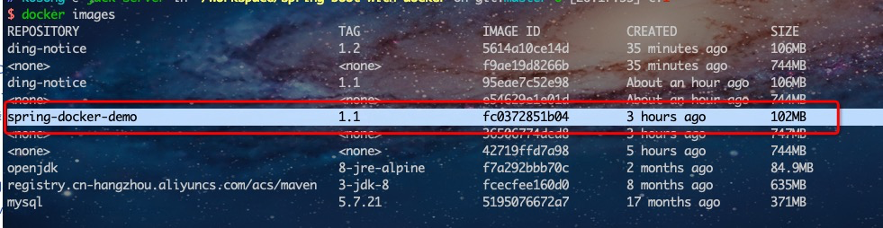
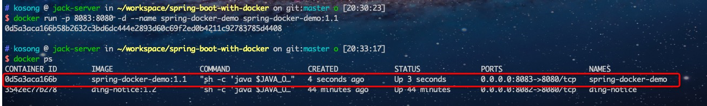

曾经看到马老师写的一篇文章，说懒才是人类进步的阶梯——懒得爬楼梯，所以有了电梯，懒得包肉夹馍，就把馅撒在饼上，做成的披萨卖的比肉夹馍还贵，懒得泡茶，糖水装进瓶子就买，可乐卖成了最畅销的饮料…由于年代久远，具体内容和真实性已经不可考，但是文章的新颖的观点却给我留下很深刻的印象。
在本地开发spring boot时，要安装一次jdk和maven，配置好环境变量，到了部署的时候，还需要在服务器再安装一遍，想想都累。而搜索的很多博客，都只讲了打包好的java的docker部署，但如果打包都不想做，有没有一步到位的方法呢？当然是有的，本文将逐步讲解只有工程文件的基础上，如何打包和部署spring boot应用。
一、环境要求
docker 自然是必不可少的（没有安装的，可以参考docker docs官方文档安装）；
为了加快docker镜像的下载速度，建议将docker镜像修改为国内源；使用vim 编辑 /etc/docker/daemon.json 文件，没有该文件的话，新建一个，修改以下内容：
1 | vim /etc/docker/daemon.json |
二、修改项目maven仓库源
编辑项目的pom.xml文件，添加以下内容，将当前项目maven仓库源修改为阿里云的镜像；
1 | <!-- maven 仓库使用阿里云镜像 --> |
三、编写Dockerfile文件
这是docker部署应用的最重要的一环，此文件将指明项目所需要的基础镜像，以及在此镜像上的操作，将以此文件为基础，构建项目的部署容器。
在项目的根目录下，新建一个Dockerfile文件，内容如下：
1 | # First stage - Compiling application |
可以看到，部署分为两个阶段：
- 在maven镜像基础上，检查项目的pom.xml指明的依赖，下载完依赖后，将项目文件复制进容器，打包项目。
- 在openjdk:8镜像的基础上，暴露出容器的8080端口，运行打包好的jar文件，完成部署过程。
上述两个基础镜像的版本可以根据自己的需要进行更改。但基本理念不变。
四、构建项目镜像
在此基础上，构建出一个镜像：
1 | docker build -t spring-docker-demo ./ |
-t 指定生成镜像的名称
./ 指定Dockerfile文件的位置
执行成功后，使用 docker images查看全部镜像，看到如下内容，则镜像构建成功：

五、运行
运行容器：
1 | docker run -p 8083:8080 -d --name spring-docker-demo spring-docker-demo:1.1 |
-p 端口映射，本地端口:容器端口
-d 后台运行模式
–name 自定义容器名字
使用docker ps查看容器运行情况，可以看到刚运行的应用已经启动了：

可以通过服务器ip加端口号访问刚才运行的应用进一步确认，这个端口号是映射在宿主机的端口号，而不是应用暴露的端口号，这里，端口号是8083；
一个spring boot项目就已经打包部署成功了，更多问题，欢迎到github仓库提issuse进行交流。